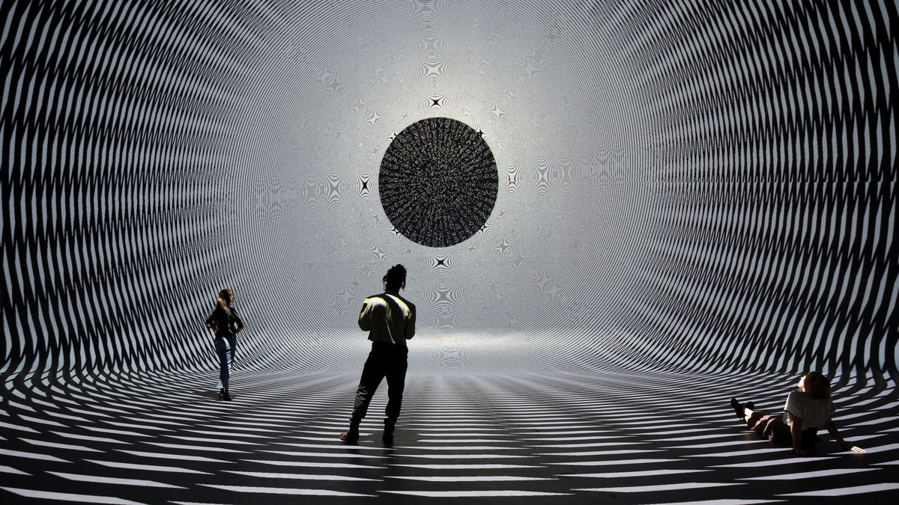
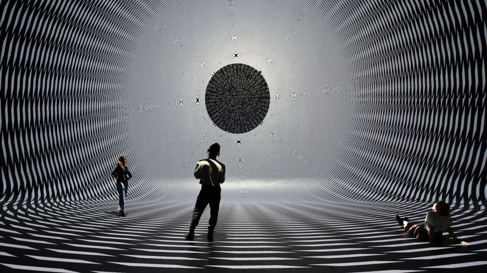
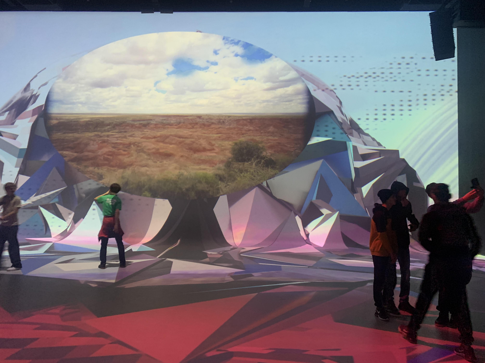
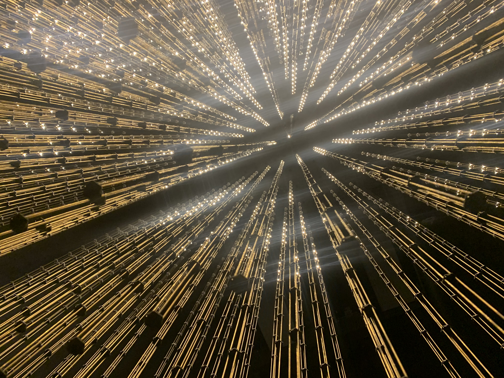

Nxt Museum
Kunst
"Het is onze missie om vooruitstrevende vormen van creativiteit te stimuleren. Wij zien de toekomst als een van de meest fascinerende concepten van het menselijk brein. Het is een onuitputtelijke bron van inspiratie die ons in de greep houdt en de vraag oproept: ‘What’s Nxt?’. Met het oog op technologische en sociale ontwikkelingen is deze vraag een groter mysterie dan ooit tevoren. Ga je mee op zoek naar het antwoord?"
 
 
Geschiedenis
Het is onze missie om vooruitstrevende vormen van creativiteit te stimuleren. Wij zien de toekomst als een van de meest fascinerende concepten van het menselijk brein. Het is een onuitputtelijke bron van inspiratie die ons in de greep houdt en de vraag oproept: ‘What’s Nxt?’. Met het oog op technologische en sociale ontwikkelingen is deze vraag een groter mysterie dan ooit tevoren. Ga je mee op zoek naar het antwoord?
 